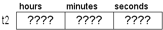
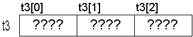
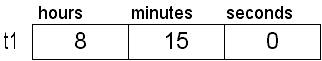
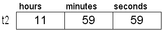
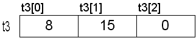
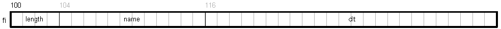
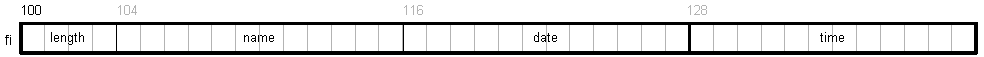
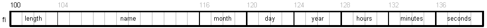

Structures
A structure is similar to an array in that it is an aggregate data structure:The general syntax of a struct:
struct tag { members } variable-list;
struct tag
{
member1
member2
...
memberN
} variable-list;
Create a structure type named TIME, (no space is allocated at this point):
Structure Layout struct TIME { int hours; int minutes; int seconds; };
This example creates two variables of type struct TIME, (space is allocated). Compare to an array:
Visually: (the structures and array are uninitialized)struct TIME t1, t2; /* You must include the struct keyword */ int t3[3]; /* An array of 3 integers */
What do you think sizeof(struct TIME) is?

Assigning values to the fields: (Operator precedence chart)
/* Set the fields of t1 */ t1.hours = 8; t1.minutes = 15; t1.seconds = 0;  |
/* Set the fields of t2 */ t2.hours = 11; t2.minutes = 59; t2.seconds = 59;  |
/* Set the elements of t3 */ t3[0] = 8; t3[1] = 15; t3[2] = 0;  |
/* Print out the times */
printf("Time 1 is %02i:%02i:%02i\n", t1.hours, t1.minutes, t1.seconds);
printf("Time 2 is %02i:%02i:%02i\n", t2.hours, t2.minutes, t2.seconds);
/* Assign all fields from t2 to t1 (Legal for structures, illegal for arrays) */
t1 = t2;
/* Print out the times again */
printf("Time 1 is %02i:%02i:%02i\n", t1.hours, t1.minutes, t1.seconds);
printf("Time 2 is %02i:%02i:%02i\n", t2.hours, t2.minutes, t2.seconds);
Output:
Time 1 is 08:15:00
Time 2 is 11:59:59
Time 1 is 11:59:59
Time 2 is 11:59:59
Initializing Structures
Structures are initialized much like arrays:Another example:
Structure definition Initializing TIME variables struct TIME { int hours; int minutes; int seconds; };struct TIME t1 = {10, 15, 0}; /* 10:15:00 */ struct TIME t2 = {10, 15}; /* 10:15:00 */ struct TIME t3 = {10}; /* 10:00:00 */ struct TIME t4 = {0}; /* 00:00:00 */ struct TIME t5 = {}; /* Illegal */ struct TIME t6 = { , , 5}; /* Illegal */
Review of array initialization vs. assignment:
Structure definition Initializing STUDENT variables struct STUDENT { char first_name[20]; char last_name[20]; int age; float GPA; };/* Initialization statement */ struct STUDENT s1 = {"Johnny", "Appleseed", 20, 3.75F}; /* Equivalent assignment statements */ strcpy(s1.first_name, "Johnny"); strcpy(s1.last_name, "Appleseed"); s1.age = 20; s1.GPA = 3.75F; /* Don't try and do this (you can't use assignment with arrays) */ s1.first_name = "Johnny"; /* Illegal */ s1.last_name = "Appleseed"; /* Illegal */
More examples:char string[20]; /* Array of 20 characters, uninitialized */ string = "Johnny"; /* Illegal, "pointer" is const */ strcpy(string, "Johnny"); /* Proper assignment */
Slightly different structure:
Structure definition Initializing STUDENT variables struct STUDENT { char first_name[20]; char last_name[20]; int age; float GPA; };/* Initialize all fields */ struct STUDENT s2 = {"Tom", "Sawyer", 15, 1.30F}; /* Set age and GPA to 0 */ struct STUDENT s3 = {"Huckleberry", "Finn"}; struct STUDENT s4 = {""}; /* Initialize everything to 0 */ struct STUDENT s5 = {{0}}; /* Initialize everything to 0 */ /* Initializing arrays */ char first_name[20] = 0; /* Illegal, need curly braces */ char first_name[20] = {}; /* Illegal, need at least one value */ char last_name[20] = ""; /* Ok, all elements are 0 */ char last_name[20] = {0}; /* Ok, all elements are 0 */
More review of pointers vs. arrays and initialization vs. assignment:
Structure definition Initializing STUDENT2 variables struct STUDENT2 { char *first_name; char *last_name; int age; float GPA; };/* Initialization statement */ struct STUDENT2 s1 = {"Johnny", "Appleseed", 20, 3.75F}; /* Equivalent assignment statements */ s1.first_name = "Johnny"; s1.last_name = "Appleseed"; s1.age = 20; s1.GPA = 3.75F; strcpy(s1.first_name, "Johnny"); /* BAD IDEA */ strcpy(s1.last_name, "Appleseed"); /* BAD IDEA */
char s1[20] = "CS120"; /* sizeof(s1)?, strlen(s1)? */ char s2[20]; /* sizeof(s2)?, strlen(s2)? */ char *p1 = "CS120"; /* sizeof(p1)?, strlen(p1)? */ char *p2; /* sizeof(p2)?, strlen(p2)? */ s2 = "CS120"; /* Illegal */ strcpy(s2, "CS120"); /* OK */ p2 = "CS120"; /* OK */ strcpy(p2, "CS120"); /* Legal, but very bad */
There is a caveat when initializing a structure with fewer initializers than there are fields in the struct. The GNU compiler will give you warnings with the -Wextra switch:
1. struct TIME
2. {
3. int hours;
4. int minutes;
5. int seconds;
6. };
7.
8. struct TIME t1 = {10, 15, 0}; /* 10:15:00, no warning */
9. struct TIME t2 = {10, 15}; /* 10:15:00, warning */
10. struct TIME t3 = {10}; /* 10:00:00, warning */
11. struct TIME t4 = {0}; /* 00:00:00, no warning */
Starting with version 4.0.4, this can be suppressed with -Wno-missing-field-initializers. However, do not use this command line switch for assignments or labs unless instructed to do so.main2.c:9: warning: missing initializer main2.c:9: warning: (near initialization for `t2.seconds') main2.c:10: warning: missing initializer main2.c:10: warning: (near initialization for `t3.minutes')
Structures as Parameters
Structures can be passed to functions just like any other value. However, they are different than arrays in that they are passed by value, meaning that the entire structure is copied onto the stack. This is actually a very big difference, and, as you can imagine, it can be a very expensive operation.Given this structure:
struct TIME
{
int hours; /* 4 bytes */
int minutes; /* 4 bytes */
int seconds; /* 4 bytes */
};
| Function to print a TIME | Calling the function |
|---|---|
|
|
struct STUDENT
{
char first_name[20]; /* 20 bytes */
char last_name[20]; /* 20 bytes */
int age; /* 4 bytes */
float GPA; /* 4 bytes */
};
| Function to print a STUDENT | Calling the function |
|---|---|
|
|
Structures as Members
Structures can contain almost any data type, including other structures. Sometimes these are called nested structures. These types of structures are very common and used in almost all non-trivial programs.#define MAX_PATH 12
Given this code:
struct DATE { int month; int day; int year; };struct TIME { int hours; int minutes; int seconds; };struct DATETIME { struct DATE date; struct TIME time; };struct FILEINFO { int length; char name[MAX_PATH]; struct DATETIME dt; };
We can visualize the struct in memory like this:struct FILEINFO fi;
Now highlighting the two fields of the DATETIME struct:
Now highlighting the fields of the DATE and TIME structs:
Example:
void f1(void)
{
struct FILEINFO fi; /* Create FILEINFO struct on stack */
/* Set date to 7/4/2021 */
fi.dt.date.day = 4;
fi.dt.date.month = 7;
fi.dt.date.year = 2021;
/* Set time to 9:30 am */
fi.dt.time.hours = 9;
fi.dt.time.minutes = 30;
fi.dt.time.seconds = 0;
fi.length = 1024; /* Set length */
strcpy(fi.name, "foo.txt"); /* Set name */
}
/* length name date time */
/* length name m d y h m s */
struct FILEINFO fi = {1024, "foo.txt", { {7, 4, 2021}, {9, 30, 0} } };
struct FILEINFO fi = {0};
void f2(void)
{
struct FILEINFO fi; /* Create FILEINFO struct on stack */
struct FILEINFO *pfi = &fi; /* Pointer to a FILEINFO struct */
/* Set date to 7/4/2021 */
(*pfi).dt.date.day = 4;
(*pfi).dt.date.month = 7;
(*pfi).dt.date.year = 2021;
/* Set time to 9:30 am */
(*pfi).dt.time.hours = 9;
(*pfi).dt.time.minutes = 30;
(*pfi).dt.time.seconds = 0;
(*pfi).length = 1024; /* Set length */
strcpy((*pfi).name, "foo.txt"); /* Set name */
}
Accessing a member of a pointer:
Closer look:/* error: request for member 'length' in something not a structure or union */ pfi.length = 1024;
The structure pointer operator (or informally the arrow operator) is another programmer convenience along the same vein as the subscript operator and is high on the precedence chart. It performs the indirection "behind the scenes" so:Expression Description ------------------------------------------------------------------ pfi A pointer to a FILEINFO struct *pfi A FILEINFO struct (*pfi). Accessing a member of a FILEINFO struct pfi-> Accessing a member of a FILEINFO struct (shorthand)
That's why using the structure pointer operator on a structure is illegal; we're trying to dereference something (a structure) that isn't a pointer. And that's a no-no. Same example using the structure pointer operator:(*pfi). is the same as pfi->
/* Set date to 7/4/2021 */ pfi->dt.date.month = 7; pfi->dt.date.day = 4; pfi->dt.date.year = 2021; /* Set time to 9:30 am */ pfi->dt.time.hours = 9; pfi->dt.time.minutes = 30; pfi->dt.time.seconds = 0; pfi->length = 1024; /* Set length */ strcpy(pfi->name, "foo.txt"); /* Set name */
Unlike arrays, which prohibit most aggregate operations, it is possible in some cases to manipulate structures as a whole.
Also, unlike arrays, structure members are not guaranteed to be contiguous in memory, so using pointer arithmetic within the structure is not safe to do.
Operation Arrays Structures Built-in types (e.g. int) Arithmetic No No Yes Assignment No Yes Yes Comparison No No Yes Input/Output (e.g. printf) No (except strings) No Yes Parameter passing By address only By address or value Yes Return from function No Yes Yes
According to the chart above, it is possible to return a structure from a function. What this allows us to do is to return multiple values from a function. We will still only be returning a single object, but that single object (a struct) may contain any number of members and each member may be a different type with a different value. This can be a very convenient way of returning multiple values/types from a function instead of returning them through pointers.
Structures as Parameters (revisited)
Since the default method for passing structures to functions is pass-by-value, we should modify the function so that it's more efficient. We do that by simply passing the structure by address instead.
| Function to print a STUDENT (more efficient) | Calling the function |
|---|---|
|
|
This guarantees that the function won't be changing things that it's not supposed to be changing. This is also the most common way of passing structures to functions.void print_student2(const struct STUDENT *s)
Summary of struct Syntax
Refer to the notes on typedef.The general form:
struct tag { members } variable-list;
struct tag
{
member1
member2
...
memberN
} variable-list;
struct TIME
{
int hours;
int minutes;
int seconds;
};
without the struct keyword, gcc will complain:struct TIME t1, t2; /* The struct keyword is required */
The Clang C compiler gives a better message:error: unknown type name 'TIME' TIME t1, t2; ^
error: must use 'struct' tag to refer to type 'TIME' TIME t1, t2; ^ struct 1 error generated.
You must include the struct keyword when creating struct variables in C. That's because the type is "struct TIME", not simply "TIME". In C++, the use of the struct keyword is optional when creating variables.
We can do both (define the structure and variables) in one step:
struct TIME
{
int hours;
int minutes;
int seconds;
}t1, t2; /* This allocates space */
struct TIME t3, t4; /* Create more TIME variables here */
Leaving off the tag creates an anonymous structure:
struct /* No name given to this struct */
{
int hours;
int minutes;
int seconds;
}t1, t2; /* We won't be able to create others later */
Using a typedef to create an alias:
struct TIME
{
int hours;
int minutes;
int seconds;
};
With typedef we don't need the struct keyword:typedef struct TIME Time; /* Now, 'Time' is a new type, same as 'struct TIME' */
All of the variables are the same (compatible) type, so this works:Time t1, t2; /* Create two 'Time' variables */ struct TIME t3, t4; /* Create two 'struct TIME' variables */
We can create the typedef when we define the struct:t1 = t3; /* OK */ t2 = t4; /* OK */
typedef struct TIME /* tag name */
{
int hours;
int minutes;
int seconds;
}Time; /* typedef name */
Time t1, t2; /* use typedef name */
struct TIME t3, t4; /* use tag name, needs struct keyword */
The tag name and typedef name can be the same:
typedef struct TIME /* tag name */
{
int hours;
int minutes;
int seconds;
}TIME; /* typedef same as tag */
TIME t1, t2; /* use typedef name */
struct TIME t3, t4; /* use tag name, needs struct keyword */
TIME times[10]; /* an array of 10 TIME structs */
TIME *pt; /* a pointer to a TIME struct */
TIME foo(TIME *p); /* function takes a TIME struct pointer */
/* and returns a TIME struct */
When using typedef, watch out for this:Usually, when a typedef is created, the struct keyword is not used anymore, simply because it requires extra work (typing) and is unnecessary.
typedef struct /* No tag! */
{
int hours;
int minutes;
int seconds;
}TIME; /* typedef (no tag) */
TIME t1; /* use typedef name */
struct TIME t2; /* This doesn't work anymore. */
gcc:
error: storage size of 't1' isn't known
struct TIME t1;
^
error: 't1' has an incomplete type
t1 = t2;
^
error: variable has incomplete type 'struct TIME'
struct TIME t1;
^
error: incomplete type 'struct TIME' is not assignable
t1 = t2;
~~ ^
error: tentative definition has type 'struct TIME' that is never completed
struct TIME t1;
^
note: forward declaration of 'struct TIME'
struct TIME t1;
^
Self-referencing and mutually-dependent structures
Before any data type can be used to create a variable, the size of the type must be known to the compiler:
struct NODE
{
int value;
struct NODE next; /* illegal */
};
struct NODE
{
int value;
struct NODE *next; /* OK */
};
Using a forward declaration and typedef:
typedef struct tagNODE NODE; /* Forward declaration */
struct tagNODE
{
int value;
NODE *next; /* Don't need struct keyword because of forward declaration above */
};
typedef struct NODE NODE; /* Forward declaration */
struct NODE
{
int value;
NODE *next; /* Don't need struct keyword because of forward declaration above */
};
Two structures that are mutually dependent on each other won't pose any problems. In the source file, one of the definitions must come after the other. The use of the struct keyword gives the compiler enough information:
struct A
{
int value;
struct B *b; /* B is a struct, defined later */
};
struct B
{
int value;
struct A *a; /* A is a struct */
};
struct A
{
struct A *pa; /* Need struct keyword, type is 'struct A' */
struct B *pb; /* Need struct keyword, type is 'struct B' */
};
struct B
{
struct A *pa; /* Need struct keyword, type is 'struct A' */
struct B *pb; /* Need struct keyword, type is 'struct B' */
};
struct A a; /* Need struct keyword */
struct B b; /* Need struct keyword */
typedef struct
{
struct A *pa; /* Need struct keyword, haven't seen typedef for A yet */
struct B *pb; /* Need struct keyword, haven't seen typedef for B yet */
}A;
typedef struct
{
A *pa; /* Don't need struct keyword because of typedef above */
struct B *pb; /* Need struct keyword, haven't seen typedef for B yet */
}B;
A a; /* OK because of typedef */
B b; /* OK because of tyepdef */
typedef struct A A; /* Forward declaration, compiler knows what the symbol A is */
typedef struct B B; /* Forward declaration, compiler knows what the symbol B is */
struct A
{
A *pa; /* Don't need struct keyword because of forward declaration above */
B *pb; /* Don't need struct keyword because of forward declaration above */
};
struct B
{
A *pa; /* Don't need struct keyword because of forward declaration above */
B *pb; /* Don't need struct keyword because of forward declaration above */
};
A a; /* OK, typedef */
B b; /* OK, typedef */
typedef struct tagA A; /* Forward declaration */
typedef struct tagB B; /* Forward declaration */
struct tagA
{
A *pa; /* Don't need struct keyword because of forward declaration above */
B *pb; /* Don't need struct keyword because of forward declaration above */
};
struct tagB
{
A *fp; /* Don't need struct keyword because of forward declaration above */
B *pb; /* Don't need struct keyword because of forward declaration above */
};
A a; /* OK, typedef */
B b; /* OK, typedef */
The choice is a matter of preference. Since most programmers never use the struct keyword after they create the typedef, it really doesn't make any difference if you have a distinct name for the tag.A a1; /* OK, typedef */ struct tagA a2; /* Need struct keyword */